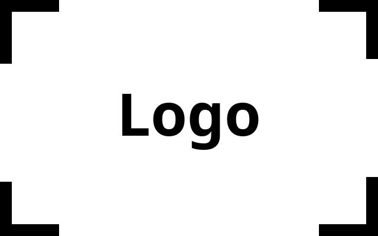

Learning technology leader with 18 years of experience building award-winning software for global enterprises.
Description of this site...
Description...
My teams have followed various agile methodologies, both to develop software and manage projects. I don't believe there's one right flavor of agile; rather, you have to pick the process that's right for the specific project and team. As my teams have tended to be smaller, with the same developers responsible for production code and new feature development, I lean towards a scrumban approach. This allows us to combine elements of scrum — like sprints, planning/retrospective meetings, and daily standups — with the visual boards and work-in-progress limits of kanban.
I delivered this presentation in December 2017 to the President of Verizon Enterprise Solutions and the Vice President of Verizon HR, pitching them on the idea of commercializing the digital learning platform my team built. I wasn't requesting funding (yet) so much as their support in exploring the possibilities. Based on this pitch, I was given contacts within the enterprise product development and adoption services (customer education) teams and started pursuing opportunities with the latter.
I prefer a shorter, more succinct BRD doc called a Project Brief. I write a brief when we're planning a new software feature or some other learning project. Each brief follows a similar format, including a solid description of the problem to solve, any pertinent data, user stories, and expected success measures. This example is interesting because I used the Kano product prioritization technique to first identify the opportunity, then I wrote the brief to scope the work.
I like to create wireframes in tandem with project briefs. Doing so helps me think about new features holistically and identify any user stories I may have missed. This set of wireframes details just a slice of the "Stats" funtionality in our enterprise learning platform. Users see analytics personalized to their role in a specific learning program. Rather than simply displaying a dashboard of widgets, we're providing users with narrative direction that nudges them torward recommended actions.